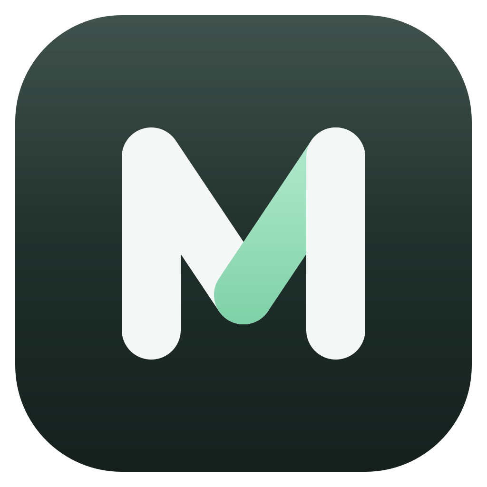

任务3 / 5
子代理1
缓存与速度
用量
问题不在统一提供商本身，而是 Pi 的后台进程每次启动都会直接崩溃，所以所有 Pi 功能都用不了。
原因
提交 b2dfcdb 把构建脚本改成了 write: false，却没有把产物写回磁盘，于是 piHost.mjs 一直停在旧版本，里面还带着 Electron 依赖。
12// write: false 时 esbuild 不落盘，要自己写13const result = await build({ write: false, metafile: true });14+for (const file of result.outputFiles)15+fs.writeFileSync(file.path, file.contents);
| 检查项 | 结果 |
|---|---|
| 构建产物不含 Electron 导入 | 通过 |
| 统一提供商模型注册 | 通过 |
| 真实模型调用 | 等你确认 |
类型检查跑完我再告诉你结果。完整记录见 版本迭代跟踪。
主视觉已经生成，保存在 outputs/splash/hero.png：

三个变体（点任意一张可在大图里左右切换）：
改动在 main/tools/imageGenerate.ts:142 和 docs/MarioCode-版本迭代跟踪.md，原图在 D:\MarioOutputs\sess_8f2c\turn-3\ turn-3 · 4 个文件双击打开 D:\MarioOutputs\sess_8f2c\turn-3\ 。
以下是几种边界状态（原型演示用）：
重新构建桌面端，确认新的 piHost.mjs 里没有 Electron 导入。
{
"command": "pnpm --filter @mcode/desktop build",
"description": "重新构建桌面端，确认新的 piHost.mjs 里没有 Electron 导入",
"timeout": 600000
}
- 删掉旧的字重补偿规则，正文字重浅色 400、深色 450
tailwind.config.js接上三档阴影，替换散落的shadow-2xl- 深色主题按原型重调表面、文字、边框三层明度
- 圆角收成 6 / 8 / 12 / 14 + 全圆，排好中文字体栈
侧栏默认显示哪种视图？